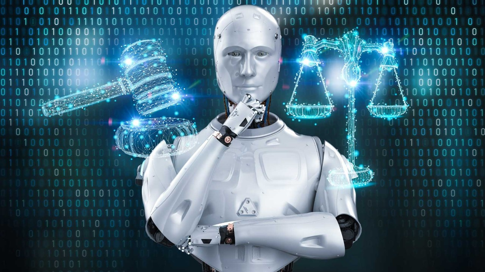
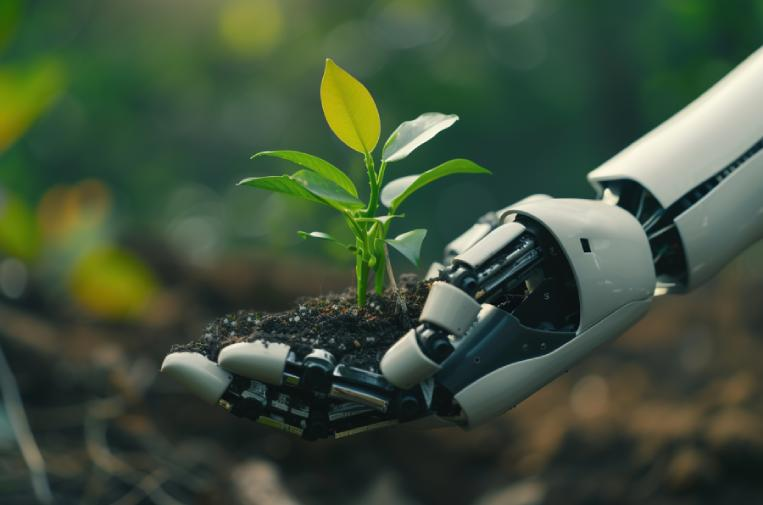
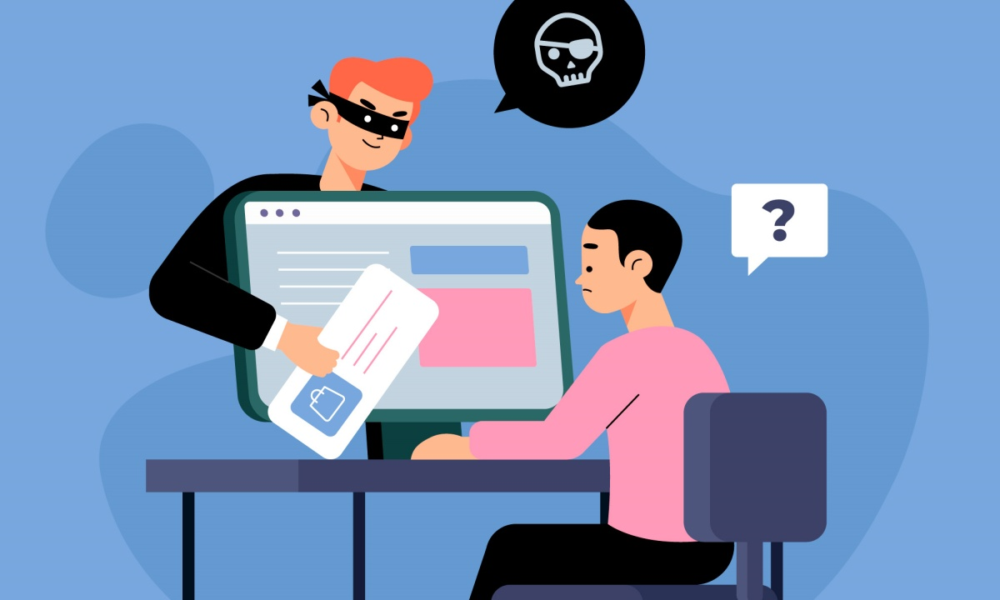

La inteligencia artificial (IA) transforma la sociedad optimizando tareas y mejorando la medicina, pero genera riesgos éticos, laborales y una alta huella ambiental. Su infraestructura consume grandes cantidades de agua y energía, acelerando el cambio climático, mientras revoluciona áreas como la educación y los servicios.
El uso ético de la IA implica transparencia, responsabilidad y equidad, declarando su uso y evitando el plagio o la "deuda cognitiva". Los sesgos de la IA son prejuicios sistemáticos —raciales, de género o sociales— derivados de datos de entrenamiento defectuosos o sesgos humanos, que generan resultados discriminatorios.

El derecho a la imagen es un derecho personalísimo que permite a toda persona controlar la captura, reproducción y difusión de su apariencia física, voz y rasgos identificativos. En Uruguay, la Ley N° 18.331 protege la imagen como dato personal, requiriendo consentimiento expreso para su uso, especialmente en publicidad, y prohibiendo la difusión no autorizada que afecte la privacidad.

Los derechos digitales son la extensión de los derechos humanos al entorno en línea, diseñados para proteger la privacidad, libertad de expresión y seguridad de las personas en internet. A medida que la tecnología avanza, las regulaciones evolucionan para garantizar un entorno digital seguro y equitativo.
El plagio digital es la apropiación y uso de contenido protegido (textos, imágenes, vídeos, código) en internet sin autorización ni atribución al autor original. Es una práctica deshonesta y a menudo ilegal, facilitada por el «copia y pega», que viola derechos de propiedad intelectual y normas éticas.

Las licencias y derechos de autor en producciones digitales protegen automáticamente creaciones originales (texto, imágenes, software, video) desde su existencia en internet.
"Constitución de la republica oriental del uruguay" (2024, 21 de octubre). ley N° 20383 .IMPO.
https://www.impo.com.uy/bases/leyes-originales/20383-2024/59